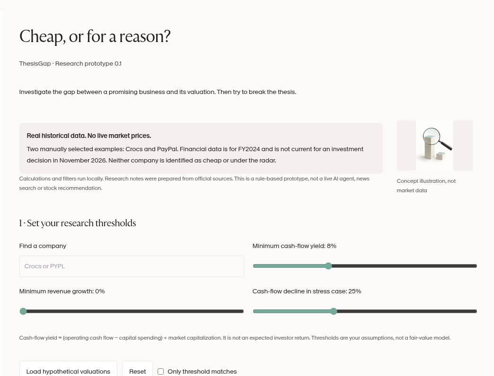

Hi, I'm Sagi.Glad you stopped by.
I spent years in control rooms and operations, reading signals and keeping systems moving.Now I'm learning to do the same with data.

Three things that never changed
Operated complex systems under pressure.
Moved between worlds, languages and industries.
Now learning to analyze all of it with data.
What I'm building

What must the market be assuming when a good business trades at a low valuation? A rules-based tool that works backwards from a valuation to the break point where the price is fair.
Open the interactive exampleWhen a company's profit rises, does the cash actually follow? An agent that checks the claim against the reports and says "can't determine" when the evidence is thin.
Where I'm coming from
A reconnaissance unit, a railway depot, an operations role in France, a control room at Teva. My background spans different environments; my curiosity is about how things work and how they could work better.
I like taking an idea from one world and applying it in another. Studying Economics and Computer Science gives me new ways to explore those connections.
I bring an operational perspective and structured thinking. I'm looking for a Data Analyst role where I can investigate, build, and make information useful.
Systems I've kept running
I supervised operational shifts and operated command systems, coordinating personnel, setting priorities and responding to risks.
I managed local operations in Toulouse, keeping work moving and working with local authorities to meet regulatory requirements.
I led depot shifts, keeping safety standards and performance targets in focus under operational pressure.
I worked with my team to assess unfamiliar situations, respond quickly and solve problems as they unfolded.
The toolkit I'm building
B.A. Economics and Computer Science (Systems & Applications), The Open University of Israel, 2025 - Present. Every course is here because it sharpens the analyst work: economics for the questions, computer science for the tools.
What I work with
Excel at an intermediate level; SQL at a beginner level. Python was my first programming language, with foundations in programming and algorithms developed through a campusIL course.
I also work with VS Code, Git, and AI assistants - all of them on the wall below.
Tools I reach for
Let's talk
Open to junior data analyst roles and internships. If you've read this far, you already know how I think. I'd be glad to show you how I work.